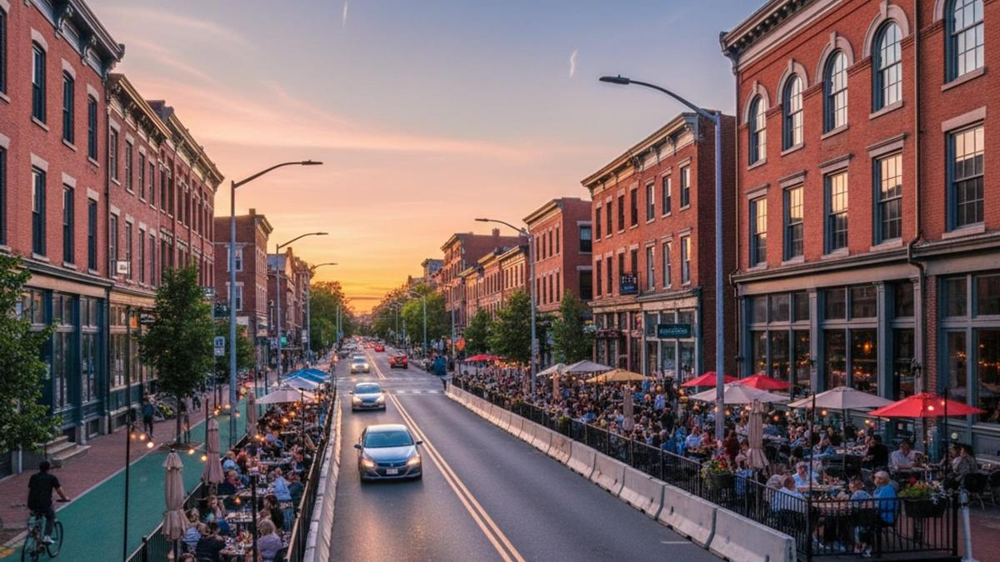
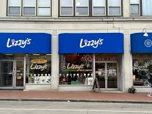
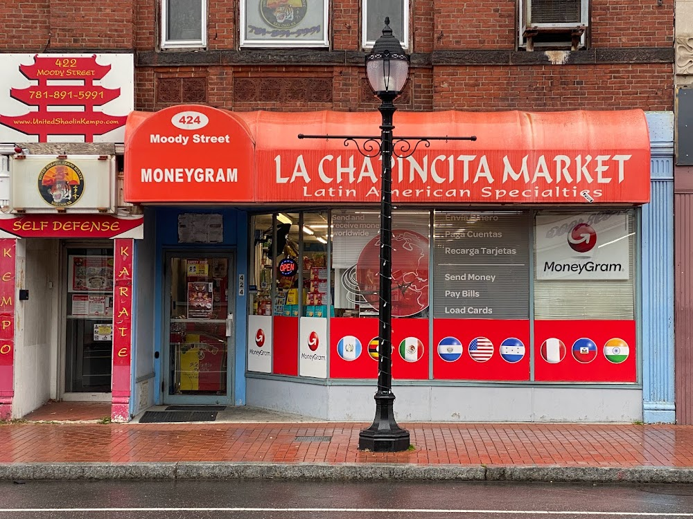

Where I live, there's not a lot to do. Sure I could grab a donut from the Dunkin's across the street or walk to the playgrounds on Lake Street. But sometimes, I get an itch to go walk around and go window shopping, and get a real taste of city life (as close as you can get), but not go too far from.

Moody Street is the closest thing you can get in this city. Right next to the Common, go cross the river and you'll reach it! They got a lot of places here, from Salvadorian food and vacuum stores to Greek pizza and the best local ice cream around.

A lot of the times we come, surprisingly, is to still go grocery shopping. However here, there'sa lot of unique stores to shop here. We usually go to a little market called La Chapincita. If you like Latino foods and products (especially those from Mexico), they got lots of them here. Especially candy, they have lots of Bubu Lubus and Bubbaloos (completely different things, trust me). They also have pinatas, portraits of Mary, vigil candles, and medicine that I dont entirely trust. But hey, my mom swears they work.

There's a lot of similar markets like them. Near the Commons, there's Despensa Familiar, and further down in Newton, there's Salgueros Market (which my dad has claimed is owned by distant cousins, but who knows?). A lot of these places give people like my family a safe haven, a taste of home away from home. It's nice I get to be a part of that as well.